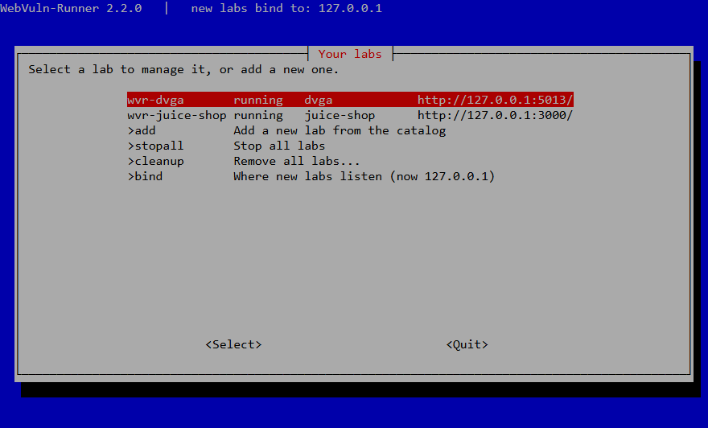
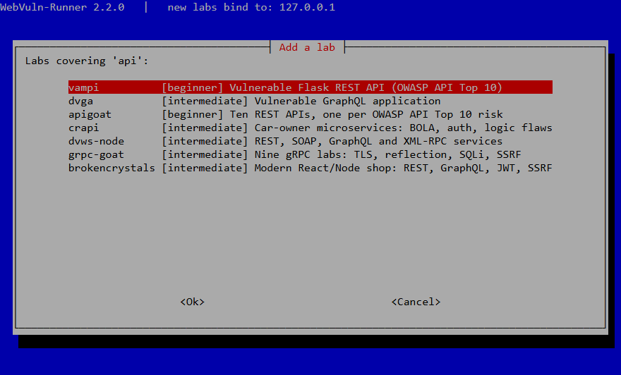

WebVuln-Runner
Start many deliberately vulnerable web apps, APIs and benchmark targets in Docker — from a terminal menu or one command.
Get Started View on GitHubStart many deliberately vulnerable web apps, APIs and benchmark targets in Docker — from a terminal menu or one command.
Get Started View on GitHubWhy use WebVuln-Runner?
Labs listen on 127.0.0.1 only. Exposing a lab to your network is an explicit, warned opt-in.
Everything it creates is labelled; other containers on your host are never listed, stopped or removed.
Waits until the app actually answers. Several labs run side by side, each on its own port.
A terminal menu to add, start, stop, inspect and remove labs. Multi-container labs like crAPI start as one unit.
Generated from src/catalog.json — the same catalog the tool uses.
Vulnerability topics (pick one or more):
Debian / Ubuntu / Kali, Fedora / RHEL / Rocky / AlmaLinux and Arch Linux.
The installer installs Docker and the other dependencies. It then downloads a tagged release,
verifies its SHA-256 checksum and installs the webvuln-runner command.
curl -fsSLO https://raw.githubusercontent.com/yusufarbc/webvuln-runner/v2.2.1/installers/install.sh
less install.sh # read it first
sudo bash install.shsudo webvuln-runner, or add your user to the docker group knowing what
that grants.
Run webvuln-runner and manage everything from the menu: add a lab by topic or level,
start, stop, check status, read logs and remove it.


The same actions are also available as commands, e.g.:
webvuln-runner up crapi
webvuln-runner list
webvuln-runner rm wvr-crapi --volumesThis page is a read-only catalog. A web page cannot safely control your Docker daemon, so labs are managed from the terminal.